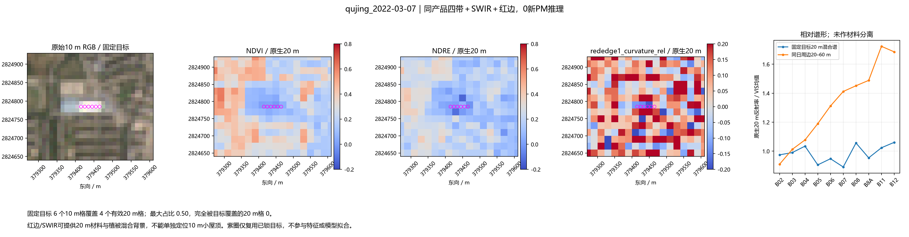
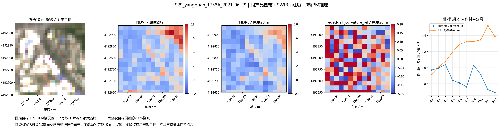
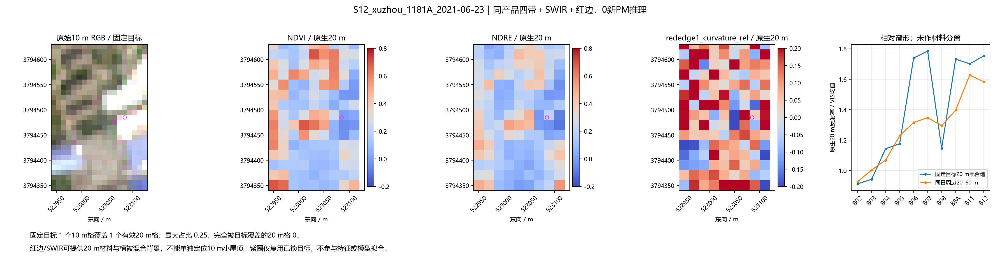
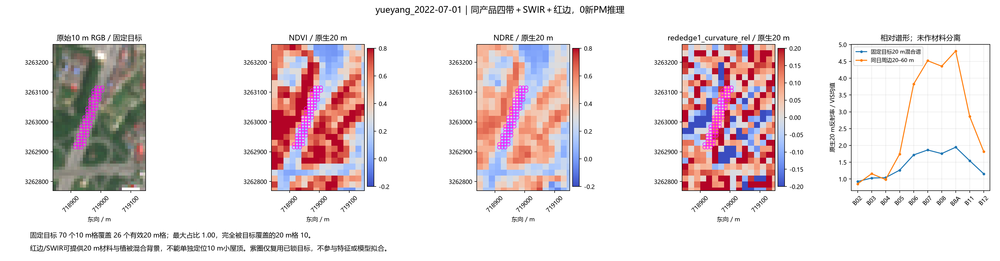
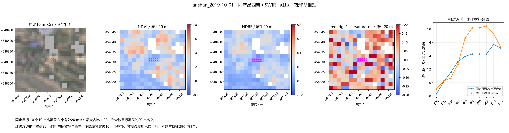
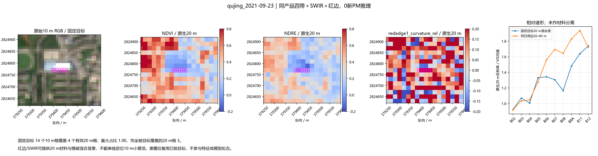

新补20个红边资产，全部成功；20 m背景信息，0新拟合、0新PM推理。阳泉最大混合风险仍呈亮材料谱形，没有新增的纯道路判别证据。
结论与具体读数 · 固定范围 · 真实可用性 · 固定目标 · 全部原锁对象 · 20m覆盖份额

产品：S2B_48RUP_20220307_0_L2A；原四带和SWIR精确复放。

产品：S2A_49SGC_20210629_1_L2A；原四带和SWIR精确复放。

产品：S2A_50SND_20210623_1_L2A；原四带和SWIR精确复放。

产品：S2A_49RGN_20220701_0_L2A；原四带和SWIR精确复放。

产品：S2B_51TVF_20191001_0_L2A；原四带和SWIR精确复放。

产品：S2A_48RUP_20210923_1_L2A；原四带和SWIR精确复放。